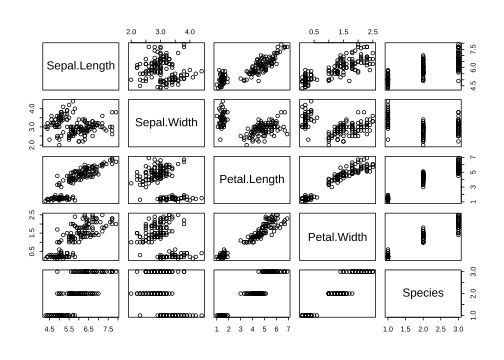
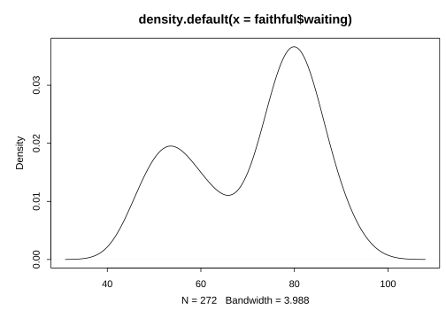

A 程序初步
如第 2 章所讲，R 的编程方式是面向对象（Object-Oriented）的，这里我们把 R 中的数据类型简要介绍一下，以便读者能熟练操纵数据；此外，我们也简要介绍一下 R 编程中的选择与循环语句以及输入输出的操作。
A.1 对象类型
在 R 的系统中，几乎任何东西都是对象 。使用对象的好处在于它们都可以重用（Reuse）。例如我们可以建立并拟合一个回归模型（不妨称之为 fit），这个对象中包含了若干子对象，在后面的计算中我们随时可以调用这个对象中的子对象，如残差向量（fit$residuals 或 resid(fit)）、系数估计（fit$coefficients 或 coef(fit)）等。面向对象的编程方式尤其在涉及到大量计算的工作中会大显身手，刚才我们提到的只是做一个回归模型，看起来优势并不明显，但如果我们想用某个因变量针对 1000 个自变量分别作回归，然后看看回归系数的 t 值或者 AIC 值的分布情况等等，这时“对象”操作的便利性就充分体现出来了，相比之下，读者不妨考虑用 SPSS 或其它软件如何完成类似的任务及其难度。掌握了 R 的对象之后，在 R 的世界编程基本就可以畅通无阻了。
A.1.1 向量
向量 （vector）是最简单的数据结构，它是若干数据点的简单集合，如从 1 到 10 的数字：
1:10## [1] 1 2 3 4 5 6 7 8 9 10通常我们可以用函数 c() 拼接一些数字或字符生成一个向量，如：
c(7.11, 9.11, 9.19, 1.23)## [1] 7.11 9.11 9.19 1.23我们可以将一个向量赋值给一个变量：
(x <- c(7.11, 9.11, 9.19, 1.23))## [1] 7.11 9.11 9.19 1.23注意 R 中赋值符号可以是 <- 或 =，或 ->（从左往右赋值），或者使用 assign() 函数进行赋值。向量的运算一般都是针对每一个元素的运算，如：
1 / x## [1] 0.1406470 0.1097695 0.1088139 0.8130081x + 1## [1] 8.11 10.11 10.19 2.23实际上以向量的形式进行元素运算是 R 语言计算的重要特征。通过中括号和下标值可以提取向量中的元素或者改变相应位置的元素：
x[c(1, 4)]## [1] 7.11 1.23(tmp <- x) # 将 x 赋值给 tmp## [1] 7.11 9.11 9.19 1.23tmp[1] <- 10
tmp## [1] 10.00 9.11 9.19 1.23利用现有的向量可以继续利用 c() 生成新的向量：
(y <- c(x, 12.19))## [1] 7.11 9.11 9.19 1.23 12.19向量的长度可以用 length() 获得：
length(y)## [1] 5我们还可以用 names() 给向量的每一个元素命名：
names(x) <- LETTERS[1:length(x)]
x## A B C D
## 7.11 9.11 9.19 1.23对于有名称的向量，我们可以用名称提取向量的元素（获取数据子集的方式通常有三种：整数下标、子对象名称以及逻辑值）：
x[c("B", "A")]## B A
## 9.11 7.11函数 sort() 可以对向量排序（顺序或倒序）：
sort(x)## D A B C
## 1.23 7.11 9.11 9.19因为很多统计量的计算是针对一维数据的，所以用向量操作起来会非常方便，例如计算样本方差 \(\sum_{i=1}^{n}(x_{i}-\bar{x})^{2}/(n-1)\)：
sum((x - mean(x))^2) / (length(x) - 1)## [1] 14.03027var(x) # 自带函数 var() 作为对比## [1] 14.03027当然 R 提供了现成的方差函数 var()，我们不必将代码写得那么复杂，从上面的输出可以看出，直接根据公式写的代码和方差函数计算的结果是一样的。另外，向量操作可以节省显式循环的使用，如果在 C 语言或 VB 等其它程序语言中，我们只能使用几段循环来计算方差数值，因为其中涉及到两个求和函数。
使用函数 seq() 和 rep() 可以生成规则的序列，前者提供了等差数列的功能，后者可以将向量或元素重复多次从而生成新的向量，如：
10:1 # 冒号表示步长为 1 或-1 的序列## [1] 10 9 8 7 6 5 4 3 2 1seq(7, 9, .2) # 步长为 0.2## [1] 7.0 7.2 7.4 7.6 7.8 8.0 8.2 8.4 8.6 8.8 9.0seq(7, 9, length.out = 6) # 生成向量长度为 6## [1] 7.0 7.4 7.8 8.2 8.6 9.0rep(2, 10)## [1] 2 2 2 2 2 2 2 2 2 2rep(1:3, 5) # 整个向量重复 5 次## [1] 1 2 3 1 2 3 1 2 3 1 2 3 1 2 3rep(1:3, each = 5) # 每个元素重复 5 次## [1] 1 1 1 1 1 2 2 2 2 2 3 3 3 3 3rep(1:3, 1:3) # 每个元素分别重复 1、2、3 次## [1] 1 2 2 3 3 3向量除了可以是数值型之外，还可以是逻辑值、字符等，如：
(z <- (x < 5))## A B C D
## FALSE FALSE FALSE TRUEletters # letters 和 LETTERS 是 R 中的字符常量## [1] "a" "b" "c" "d" "e" "f" "g" "h" "i" "j" "k" "l" "m" "n" "o" "p" "q" "r"
## [19] "s" "t" "u" "v" "w" "x" "y" "z"注意逻辑值的 TRUE 和 FALSE 可以简写为 T 和 F，但强烈建议这两个逻辑值不要使用简写 12。我们也可以用逻辑向量提取向量的元素，如：
x[!z] # 满足“非 z”的元素## A B C
## 7.11 9.11 9.19R 中有三种特殊的值：缺失值 NA，非数值 NaN 和无穷大 / 无穷小 Inf/-Inf。非数值通常由无意义的数学计算产生，如 0/0；注意分子不为 0 而分母为 0 时，结果是无穷大。
A.1.2 因子
因子（factor）对应着统计中的分类数据，它的形式和向量很相像，只是因子数据具有水平（level）和标签（label），前者即分类变量的不同取值，后者即各类取值的名称。
因子型数据可以由 factor() 函数生成，如：
(x <- factor(c(1, 2, 3, 1, 1, 3, 2, 3, 3), levels = 1:3, labels = c("g1", "g2", "g3")))## [1] g1 g2 g3 g1 g1 g3 g2 g3 g3
## Levels: g1 g2 g3我们可以对因子型数据求频数、将其转化为整数或字符型向量。注意整数是因子型数据的本质：它本身以整数存储，但表现出来是字符，原理就是把整数对应的标签显示出来，这种存储方式在很多情况下可以大大节省存储空间（存整数往往比存字符串占用空间小）。
table(x)## x
## g1 g2 g3
## 3 2 4as.integer(x)## [1] 1 2 3 1 1 3 2 3 3as.character(x)## [1] "g1" "g2" "g3" "g1" "g1" "g3" "g2" "g3" "g3"因子型数据在分类汇总时比较有用，例如在 tapply() 中：
y <- 1:9
data.frame(y, x) # x 和 y 并列放的样子## y x
## 1 1 g1
## 2 2 g2
## 3 3 g3
## 4 4 g1
## 5 5 g1
## 6 6 g3
## 7 7 g2
## 8 8 g3
## 9 9 g3tapply(y, x, mean) # x 的每一组的均值## g1 g2 g3
## 3.333333 4.500000 6.500000因子型数据中有一种特殊的类型，就是有序因子，它与普通的因子型数据的区别在于各个分类之间是有顺序的，即统计上所说的定序变量；与此相关的函数为 ordered()。
A.1.3 数组和矩阵
数组和矩阵是具有维度属性（dimension）的数据结构，注意这里的维度并非统计上所说的“列”，而是一般的计算机语言中所定义的维度（数据下标的个数）。矩阵是数组的特例，它的维度为 2。数组和矩阵可以分别由 array() 和 matrix() 函数生成。注意矩阵中所有元素必须为同一种类型，要么全都是数值，要么全都是字符，后面我们会介绍数据框，它会放宽这个要求。这里给出一些示例说明数组和矩阵的用法：
(x <- array(1:24, c(3, 4, 2))) # 3 维数组示例## , , 1
##
## [,1] [,2] [,3] [,4]
## [1,] 1 4 7 10
## [2,] 2 5 8 11
## [3,] 3 6 9 12
##
## , , 2
##
## [,1] [,2] [,3] [,4]
## [1,] 13 16 19 22
## [2,] 14 17 20 23
## [3,] 15 18 21 24dim(x) # 维数## [1] 3 4 2x[, , 1] # 第 3 维第 1 个位置上的元素## [,1] [,2] [,3] [,4]
## [1,] 1 4 7 10
## [2,] 2 5 8 11
## [3,] 3 6 9 12x[1, , 2]## [1] 13 16 19 22(x <- matrix(1:12, nrow = 2, ncol = 6)) # 矩阵示例## [,1] [,2] [,3] [,4] [,5] [,6]
## [1,] 1 3 5 7 9 11
## [2,] 2 4 6 8 10 12x[1, 5]## [1] 9x < 5 # 逻辑比较：是否小于 5？## [,1] [,2] [,3] [,4] [,5] [,6]
## [1,] TRUE TRUE FALSE FALSE FALSE FALSE
## [2,] TRUE TRUE FALSE FALSE FALSE FALSEx[x < 5] # 以逻辑矩阵为下标挑选出小于 5 的元素## [1] 1 2 3 4x^2 # 各个元素的平方## [,1] [,2] [,3] [,4] [,5] [,6]
## [1,] 1 9 25 49 81 121
## [2,] 4 16 36 64 100 144x %*% t(x) # 矩阵乘法 X * X'（t() 为转置函数）## [,1] [,2]
## [1,] 286 322
## [2,] 322 364# 一个随机方阵
(x <- matrix(c(2, 9, 4, 5, 6, 8, 1, 3, 7), 3))## [,1] [,2] [,3]
## [1,] 2 5 1
## [2,] 9 6 3
## [3,] 4 8 7solve(x) # 求逆## [,1] [,2] [,3]
## [1,] -0.1052632 0.15789474 -0.05263158
## [2,] 0.2982456 -0.05847953 -0.01754386
## [3,] -0.2807018 -0.02339181 0.19298246# 还有 eigen(x) 求特征根与特征向量，
# 用 qr(x) 对矩阵作 QR 分解，等等
# 我们还可以用 cbind() 和 rbind() 等函数
# 将几个向量拼接成矩阵矩阵相对于数组来说在统计中应用更为广泛，尤其是大量的统计理论都涉及到矩阵的运算。顺便提一下，R 包 Matrix (Bates and Maechler 2021) 在处理（高维）稀疏或稠密矩阵时效率会比 R 自身的矩阵运算效率更高。
A.1.4 数据框和列表
数据框（data frame）和列表（list）是 R 中非常灵活的数据结构。数据框也是二维表的形式，与矩阵非常类似，区别在于数据框只要求各列内的数据类型相同，而各列的类型可以不同，比如第 1 列为数值，第 2 列为字符，第 3 列为因子，等等；列表则是更灵活的数据结构，它可以包含任意类型的子对象。数据框和列表分别可以由 data.frame() 和 list() 生成。
# 生成一个数据框，前两列为数值型，后一列为字符型
data.frame(x = rnorm(5), y = runif(5), z = letters[1:5])## x y z
## 1 -1.1696254 0.91812363 a
## 2 -0.9001745 0.54096950 b
## 3 0.7894290 0.09344114 c
## 4 1.7274746 0.59208686 d
## 5 0.8407809 0.21808252 e# 包含四个子对象的列表
(Lst <- list(name = "Fred", wife = "Mary", no.children = 3, child.ages = c(4, 7, 9)))## $name
## [1] "Fred"
##
## $wife
## [1] "Mary"
##
## $no.children
## [1] 3
##
## $child.ages
## [1] 4 7 9Lst$child.ages # 用名称提取子对象## [1] 4 7 9Lst[[2]] # 用整数下标提取子对象## [1] "Mary"# 甚至可以试试 list(first = Lst, second = 1:10) 之类的语句（list 嵌套 list）矩阵的本质是（带有维度属性的）向量，数据框的本质是（整齐的）列表。
A.1.5 函数
R 中也可以自定义函数 ，以便编程中可以以不同的参数值重复使用一段代码。定义函数的方式为：function(arglist) expr return(value)；其中 arglist 是参数列表，expr 是函数的主体，return() 用来返回函数值。例如我们定义一个求峰度 \(\sum_{i=1}^{n}(x_{i}-\bar{x})^{4}/(n\cdot\mathrm{Var}(x))-3\) 的函数 kurtosis() 如下：
kurtosis <- function(x, na.rm = FALSE) {
# 去掉缺失值
if (na.rm) x <- x[!is.na(x)]
return(sum((x - mean(x))^4) / (length(x) * var(x)^2) - 3)
}该函数有两个参数，数据向量 x 和是否删除缺失值 na.rm，后者有默认值 FALSE；下面我们用均匀分布的随机数测试一下：
# 理论上均匀分布的峰度应该小于 1，以下为一个模拟结果
kurtosis(runif(100))## [1] -1.278614注意，R 中有时候不必用函数 return() 指定返回值，默认情况下，函数主体的最后一行即为函数返回值。
最后，因为本书的很多作图函数都是泛型函数，我们也补充一点泛型函数 （generic function）的作用原理。实际上泛型函数是根据第一个参数的类（class）去调用了相应的“子函数”。以 plot() 为例，我们用 methods() 查看一下它有哪些作图方法：
head(methods("plot"), 24) # 显示前 24 个## [1] "plot.acf" "plot.data.frame" "plot.decomposed.ts"
## [4] "plot.default" "plot.dendrogram" "plot.density"
## [7] "plot.ecdf" "plot.factor" "plot.formula"
## [10] "plot.function" "plot.hclust" "plot.histogram"
## [13] "plot.HoltWinters" "plot.isoreg" "plot.lm"
## [16] "plot.medpolish" "plot.mlm" "plot.ppr"
## [19] "plot.prcomp" "plot.princomp" "plot.profile.nls"
## [22] "plot.R6" "plot.raster" "plot.spec"可以看出，这些函数都是以 plot.* 的形式定义的，其中*便是类的名称。泛型函数的基本原理就是：传给 plot() 的第一个参数是何种类，则调用何种函数进行作图。例如 iris 的类是 data.frame，那么 plot(iris) 就会调用 plot.data.frame() 作图（散点图矩阵）。下面的代码有助于进一步说明这种原理：
class(iris)## [1] "data.frame"plot(iris) # 调用 plot.data.frame() 作散点图矩阵
x <- density(faithful$waiting)
class(x)## [1] "density"par(mar = c(4, 4, 3, 0.5))
plot(x) # 调用 plot.density() 作密度曲线
我们也可以对现有的泛型函数进行扩充，使它们适应我们自定义的类。例如 print() 也是一个常用的泛型函数，当我们在 R 控制台中键入一个对象以显示其内容时，实际上是调用了该函数以打印出对象的内容。现在我们定义一个 print.xie()，使得类名称为 xie 的对象在屏幕上打印出来时数值为真实数值的 2 倍：
# 本例告诉我们，眼见未必为实！
x <- 1:5
class(x) # 原始的类## [1] "integer"class(x) <- "xie" # 改变类
x## [1] 1 2 3 4 5
## attr(,"class")
## [1] "xie"print.xie <- function(x) print.default(unclass(2 * x))
x # 打印出来的数值变成了原来的 2 倍## [1] 2 4 6 8 10str(x) # 但真正的构成是：## 'xie' int [1:5] 1 2 3 4 5至此，读者应该能够明白有些作图函数既可以直接接受数据作为参数又可以接受公式作为参数的原因了，如 boxplot()。
A.2 操作方法
在了解对象的几种基本类型之后，我们需要知道如何对这些对象进行简单的四则运算之外的操作。在计算机程序和算法中，最常见结构的就是选择分支结构和循环结构，通过这样的程序语句，我们可以进一步控制和操纵对象；同时，在执行计算机程序时，我们也常常需要一些输入输出的操作。
A.2.1 选择与循环
一般来说，计算机程序都是按代码先后顺序执行的，而有时候我们希望代码能够按照一定的判断条件执行，或者将一个步骤执行多次，此时我们就需要选择 和循环结构 的程序。
R 提供了如下一些实现选择和循环的方法：
if(cond) expr if(cond) cons.expr else alt.exprfor(var in seq) exprwhile(cond) expr
cond 为条件（其计算结果为逻辑值 TRUE 或 FALSE），expr 为一段要执行的代码，通常放在大括号{}中，除非代码只有一行。
选择结构的函数还有 ifelse() 和 swith()，请读者自行查阅帮助文件。关于选择和循环，这里仅给出一个简单的综合示例，不再详加说明：
# x 初始为空
x <- NULL
for (i in 1:10) {
rnd <- rnorm(1)
# 如果随机数在 [-1.65, 1.65] 范围内则放到 x 中去
if (rnd < 1.65 & rnd > -1.65) {
x <- c(x, rnd)
}
}
x## [1] -0.9827231 0.7618305 -0.3230478 1.2653318 -0.4007696 -0.8807212A.2.2 输入与输出
对于统计程序来说，输入的一般是数据，而输出一般是图形和表格，它们在 R 中都容易实现。前者可以参考 read.table() 系列函数，后者则可以使用图形设备（附录 B.6）以及 write.table() 系列函数。具体使用方法请查阅这些函数的帮助文件。
A.3 思考与练习
绝对离差中位数（Median Absolute Deviation，MAD）：MAD 是对数据分散程度的一种刻画，它的定义为 \(\text{MAD}(x)=C\cdot\text{median}(|x-\text{median}(x)|)\)，其中 \(C\) 是一个给定的常数，通常取值为
1/qnorm(.75)；若原数据服从正态分布，MAD 将是标准差的一个渐近估计。编写函数计算数据women$height的绝对离差中位数，并与 R 自带的mad()函数作比较；若有兴趣，请欣赏mad()函数的源代码（如何将程序写得安全而简练）。变量选择问题：某多元线性回归模型包含了 20 个自变量，根据某些经验，自变量的个数在 3 个左右是最合适的。要求建立所有可能的回归模型，并根据 AIC 准则找出最优模型以及相应的自变量。
提示：所有回归模型数目为组合数 \(C_{20}^{3}=1140\)，可使用函数
combn()生成所有组合，用lm()建模，并用AIC()提取 AIC 值。DNA 序列的反转互补：给定一个 DNA 序列字符串，要求将它的字符序列顺序颠倒过来，然后 A 与 T 互换，C 与 G 互换。例如原序列为“TTGGTAGTGC”，首先将它顺序反转为“CGTGATGGTT”，然后互补为“GCACTACCAA”。
提示：可以采用
substr()暴力提取每一个字符的方式，然后用繁琐的循环和选择语句实现本题的要求；但利用 R 的向量化操作功能会大大加速计算速度，可采用的函数有：拆分字符串strsplit()、反转向量rev()、拼接字符串paste()。仔细考虑如何利用名字和整数的下标功能实现序列的互补。接受 — 拒绝抽样（Acceptance-Rejection Sampling）：当我们不容易从某个分布中生成随机数的时候，若有另一个分布的密度函数 \(g(x)\) 能控制前一个分布的密度函数 \(f(x)\) 的核 \(h(x)\)（此处“控制”的意思是 \(\exists M>0,\ h(x)/g(x)\leq M,\ \forall x\)，核 \(h(x)\) 正比于 \(f(x)\)），而且我们很方便从 \(g(\cdot)\) 中生成随机数，那么我们可用“接受 — 拒绝抽样”的方式从 \(f(\cdot)\) 中生成随机数。步骤如下：
从 \(g(\cdot)\) 中生成随机数 \(x_{i}\)；
从均匀分布 \(U(0,1)\) 中生成随机数 \(u_{i}\)；
若 \(u_{i}\leq h(x_{i})/(M\cdot g(x_{i}))\)，则记下 \(x_{i}\)；
重复以上步骤若干次，被接受的 \(x_{i}\) 的概率密度函数即为 \(f(\cdot)\)。根据以上抽样步骤用适当的循环和选择语句生成服从以下分布的随机数：
\[f(\theta)=c\frac{\exp(\theta)}{1+\exp(\theta)}\frac{1}{\sqrt{2\pi}}\exp(-\theta^{2}/2)\]
其中，\(c\) 为使得 \(f(\theta)\) 积分为 1 的常数。